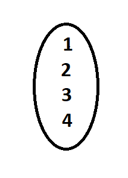
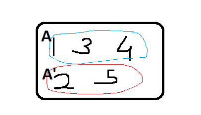
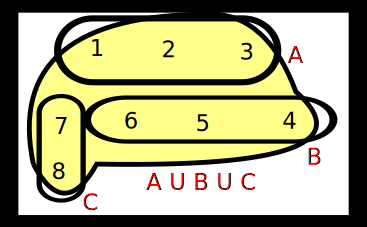

In mathematics a set is a well-defined collection of distinct objects.
Example → {1,2,3,4} ✓ &, {1,1,2,5}×
The arrangement of the objects in the set does not matter.
{1,2,3} = {2,1,3}
More Examples
1- Odd natural numbers less than 10 → {1,3,5,7,9} ✓
2- The rivers of India✓
3- The vowels in the english vowel 4- All beautiful people of India ×
5- Prime factors of 210✓
Before going ahead in set theory look at some symbols [important symbols]
1- Roaster / Tabular form : A = {1,2,3,4,5}
2- Set Builder / property form : A = {x: 5≥x≤1, x &∈N}
3- Visual Representations :

→ If no. of elements are finite. Ex- A={1,2,3}
→In finite sets there is special term defined that is cardinal no. of set.
→Cardinal no. is only defined for finite sets
→If no. of elements are infinite.
→B={1,2,3,...}
→Set of natural numbers ✓
→Set of whole numbers ✓
→Set of rational numbers ✓
Cardinal no. of a set AKA order of a set → no. of elements in a set is known as cardinal no. of set.
A={1,2,3,x,y}
Cardinal no. of set A = 5
Represented as n(A) → O(A) → |A|
n(A) = 5
There are some infinite sets of whome we should know the symbols.
☆ N represents → set of all nutural number
☆ W represents → set of all whole
number
☆ R+ → positive real number
☆ R- → negative real number
☆ Q → Rational numbers
☆ Z,I → Integer
☆ Z+, Z+ → positive integers
☆ Z-, Z- → negative integers
☆ R-Q → set of irrational no.
There is no symbol for irrational number rather than [R-Q]
Null Set || Void set || Empty set→ If number of elements is a set are zero
→
Represented as {}, φ(pronounced as 'fi')
Ex- A={x : x ∈ R , x2+1=0 }
A={} or φ
n(A)=0
Singleton set → A={1}
If there is only one element in a set.
B = {n:
x2=0, x ≥0 }
{1}
n(B)=1
Equal Sets
A={1,2}
B={x: x2-3x + 2 = 0, x ∈ R }
Sol - x2-2x0x+2 = 0
x(x-2)-1(x-2)=0
(x-1)(x-2)=0
x=1, x=2
or →{1,2}
A=B
If all the element of two sets are same then they are said to be equal set.
All equal sets
are equivalent.
Equivalent sets
C={1,2}
D=x,y
n(C)=n(D)=2
If cardinal no. of sets is same then they are said to be equivalent.
Universal Sets → The set that has all elements relevant to our question.
→all the number between 0,2 where 0,2 are not included → denoted by (0,2)
→The interval where all the no. between 0 & 2 and 0,2 are also included.
→ denoted by
[0,2]
half opened half closed
→[0,2) or [0,2)
→The sets which are made by using the elements of original (supersets) sets
Ex→ A={1,2,3}
{}, {1}, {2}, {3}, {1,2}, {1,3}, {2,3}, {1,2,3}
These all are subset of set A.
No. of subset from superset → 2no. of elements in superset
symbols of subset → ⊂ ⊆
The set whose elements are subsets
A{1,2,3}
P(A) = {}, {1,2,3}, {1}, {2}, {3}, {1,3}, {1,2}, {2,3}
n(P(A)) → 2n(A)
Venn-diagram or Euler Venn Diagram → Visual representation of a set.

Universal Sets → complete set / Biggest set
U = {1,2,3,4,5}
A={1,3,4}
A'/Ac={2,5} → The element which are left after removing the elements of subset A
from universal set U.
Note → (A')' = A
null set φc=U
U'=φ
n(A)+n(A')=n(U)
A = {1,2,3}
B = {4,5,6}
C = {7,8}
A⋃B = {1,2,3,4,5}
A⋃B⋃C = {1,2,3,4,5,6,7,8}

Common elements
A={1,2,3}
B={2,3,5}
A⋂B={2,3}
A={1,2,3,4}
B={3,4,5,6}
A-B = {1,2}
B-A = {5,6}
A - (A⋂B) = A⋂B'
AΔB
A={1,2,3,4}
B={3,4,5,6} ☆ All elements rather than the intersection
(A-B)⋃(B-A) → {1,2,5,6}
1→ Law of complement
2→ Law of union and intersection
☆(A⋃B)' = A'⋂B'
☆(A⋂B)'=A'⋃B'
(A⋃B)'={6,7}
A'={6,5,4,7}
B'={1,2,3,6,7}
A'⋂B'={6,7}
A⋃(B⋂C) = (A⋃B)⋂(A⋃C)
union is distributive over intersection, vice versa
A⋂(B⋃C)=(A⋂B)⋃(A⋂C)
n(A⋃B)=n(A)+n(B)-n(A⋂B)
For three n(A⋃B⋃C)=n(A)+n(B)+n(C)+n(A⋂B⋂C)-n(A⋂B)-n(A⋂C)-n(B⋂C)
Q- Among a group of students, 50 played cricket, 50 played hockey and 40 played volleyball, 15 played both cricket and hockey, 20 played both hockey and volleyball, 15 played cricket and volleyball and 10 played all three. If every student played at least one game, find the no. of students and how many played only cricket, only hockey and only volleyball?